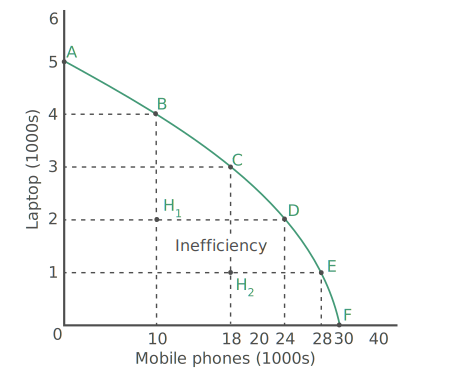
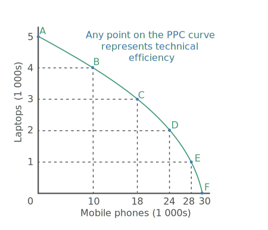

Inefficiency occurs when resources are not fully and efficiently used. Inefficiency means that the current output is lower than the potential output. The output that is produced as a result of the inefficient use of resources is therefore less than what is possible if the resources are fully and efficiently used.
In terms of our production possibilities curve, this is represented by a point such as H1 which lies inside the production possibilities curve. At point H1, 2 000 laptops and 10 000 mobile phones are produced, which is less than the potential output. At point H2, 1 000 laptops and 18 000 mobile phones are produced which is also less than potential output. By moving from point H1 to a point such as C, which is on the production possibilities curve, both more laptops and more mobile phones can be produced. Points inside the production possibility curve indicates that the society concerned is not making full and efficient use of its resources and consequently fewer needs and wants are satisfied than is possible.
While a point inside the production possibilities curve indicates that both more laptops and mobile phones can be produced, a  point on the curve indicates that it is not possible to increase the production of one good without decreasing the production of the other good. For Zanadu, this implies that if it is producing at a point such as C, it can only move to point B if it produces fewer mobile phones and it can only move from point C to point D if it produces fewer laptops.
When a point on the production possibilities curve is reached, it is referred to as technical efficiency, indicating that resources are fully and efficiently used. This is the point that any society should strive to reach, since it indicates that the society is indeed making the best use of its scarce resources.
Now do the following activity to test your understanding of this concept.